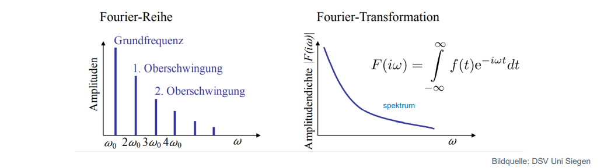

import numpy as np
from PIL import Image
import IPython.display as display
7. Fourier - Transformation#
7.1. vrl : 06#
8. Inhalt:#
▪ Diskrete Fourier-Transformation
▪ Grundlagen und Motivation
▪ Fourier-Reihe
▪ Fourier-Transformation
9. Nutzung Der Fourier-Reihe#
1.Messen der Spannung
ZB: wenn man wissen möchte, aus 50 Hz welche Frequenz(sin) hat (Spektum).
2.Die Frequenzen filtern
3.Die Darstellung des Spektrums des Signals
Wir nehmen den periodische Signale ,weil sie in der Natur sehr auftreten die Fourier-Reihe wird verwendet, um Signale in ihre Frequenzkomponenten zu zerlegen und sie zu analysieren.
from IPython.display import Image
Image(filename='Prisma_de_Newton.jpg')
10. Art der Fourier – Reihe#
⦁ Fourier Zerlegung oder Fourier Analyse
⦁ Fourier Synthese ,um ursprüngliche Signal zu bilden
Signal ist eine Funktion
\(x_p\)(t) = \(\frac{a_0}{2}\) +\(\sum_{k=1}^\infty \) a_k * cos(2πf_0t) + a2 * cos(2π2f0t) + a3 * cos(2π3f0t) + …
11. Ein praktisches Beispiel#
Audio Signal
Am Anfang ist ein sauber Sinus Signal
Am Ende hat man andere Frequenzteile
12. ⦁ Köffezienten Berechnen#
Anmerkung : Für Vereinfachung ‘ω’ wird weggelassen
13. ⦁ Rekapitulation Vereinbarung#
Periodische Signal kann ich schreiben als konstante * die Summe von cos und sin
14. a0 Rechnen#
wie bilden das bestimmte integral der rechten Seite über das Interval[-pi,pi]:
from IPython.display import Image
Image(filename='Screenshot (53).png')
#.png)
15. ak Rechnen#
#.png)
from IPython.display import Image
Image(filename='Screenshot (54).png')
#.png)
from IPython.display import Image
Image(filename='Screenshot (56).png')
16. Fourier -Transformation#
17. ▪ Fourier-Transformation ist eine Erweiterung der Fourier-Reihe für aperiodische Signale mit#
unendlicher Periodendauer ùëá0 → ∞, ùúî → 0
▪ Das Spektrum besteht nicht mehr aus absoluten Amplitudenwerten an diskreten Frequenzen ùëõùúî0 (also Vielfachen der Grundfrequenz), sondern es besteht aus der Amplitudendichte √ºber einer kontinuierlichen Frequenzachse.
(Gleiches gilt für die Phasen.)
#.png")
from IPython.display import Image
Image(filename='Screenshot (57).png')

18. Zweck Fourier Transformation#
Die Fourier transformation macht die nicht sichtbare Funktion (bestimmte Information ) sichtbar
#.png")
from IPython.display import Image
Image(filename='Screenshot (51).png')
——>
#.png")
from IPython.display import Image
Image(filename='Screenshot (52).png')
Fourier Transformation
log(ab) = log a + log b
19. Beispiel 1#
10000 =10^5 Transformation in anderen Art Über log(10.10000) = log(10) + log(10000) = 1 + 4 = 5
20. Beispiel 2#
21. Laplace Transformation#
U(t) + Rc Uc(t) + Uc(t)
—-laplace—>
U(s) = RcSUc(s) + LS²Uc(s)+Uc(s)
Hintergrund Warum wir Fourier Transformation überhaupt brauchen?
Wir möchten etw rechnen (ZB ableiten)
Durch diese Transformation wir könnten diese Signal von Domän (ZB Zeit Bereich) in andere Domän (ZB Frequenz Bereich) verwandel so können wir es einfacher rechnen.
22. lernziele#
• Sie verstehen die Anwendung von Fourier in der Signalverarbeitung.
• Sie wissen, wie periodische Signale durch Fourier-Reihen zerlegt werden können.
• Sie können die Fourier-Reihe in der komplexen Form beschreiben.
• Sie können das Prinzip der FourierTransformation nachvollziehen.
23. kontrollfragen#
23.1. Beschreiben Sie die Rolle von Fourier in der Signalverarbeitung anhand eines Beispiels.#
(Audio Signal)
23.2. Schreiben Sie die Gleichung der Fourier-Reihe für eine periodische Funktion in komplexer Form auf.#
Die Fourier-Reihe einer periodischen Funktion (f(t)) in komplexer Form zerlegt die Funktion in eine unendliche Summe von harmonischen Schwingungen.
23.3. Beschreiben Sie den Unterschied zwischen Fourier-Reihe und Fourier-Transformation#
Fourier Reihe ist Periodisch Darstellung Fourier -Transformation ist Apperiodisch Darstellung